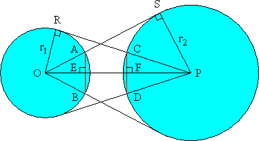

Solution to puzzle 108: Eyeball to eyeball
Take two circles, with centers O and P. From the center of each circle, draw two tangents to the circumference of the other circle. Let the tangents from O intersect that circle at A and B, and the tangents from P intersect that circle at C and D. Show that chords AB and CD are of equal length.
Let OR = r1 and PS = r2.
OP is an axis of symmetry for the figure. Hence E is the midpoint of AB, and F is the midpoint of CD.
Also by symmetry, AB and CD are perpendicular to OP.
Since OS and PR are tangents, angles ORP and PSO are right angles.
Triangles OEA and OPS share an angle, and both contain a right angle. Hence they are similar.
Therefore AE/OA = PS/OP.
Since OA = OR = r1, we have AE = r1r2/OP.
Hence AB = 2r1r2/OP.
By symmetry, it follows that CD = 2r1r2/OP. (Or we could consider similar triangles PFC and POR.)
Therefore AB = CD.
Further reading
Source: Eyeball Theorem